SUPRA SWING ist ein interaktives Schaukelobjekt, das auf den naturwissenschaftlichen Grundsätzen dreier gekoppelter Pendel, sogenannter „sympathischer Pendel“, basiert.
SUPRA SWING verweist auf unvorhergesehene kommunikative Prozesse und lädt zum Mitschwingen ein - Schaukeln als ein genuin freudvoller Prozess, in Schwung zu kommen.
Die Senatsverwaltung für Kultur und Europa hat zusammen mit der Senatsverwaltung für Stadtentwicklung und Wohnen und der Freien Universität Berlin im August 2019 den Kunstwettbewerb mit 12 deutschlandweit eingeladenen Künstler*innen für den Forschungsneubau für Supramolekulare Funktionale Architekturen an Biogrenzflächen (SupraFAB) an der FU Berlin ausgelobt.
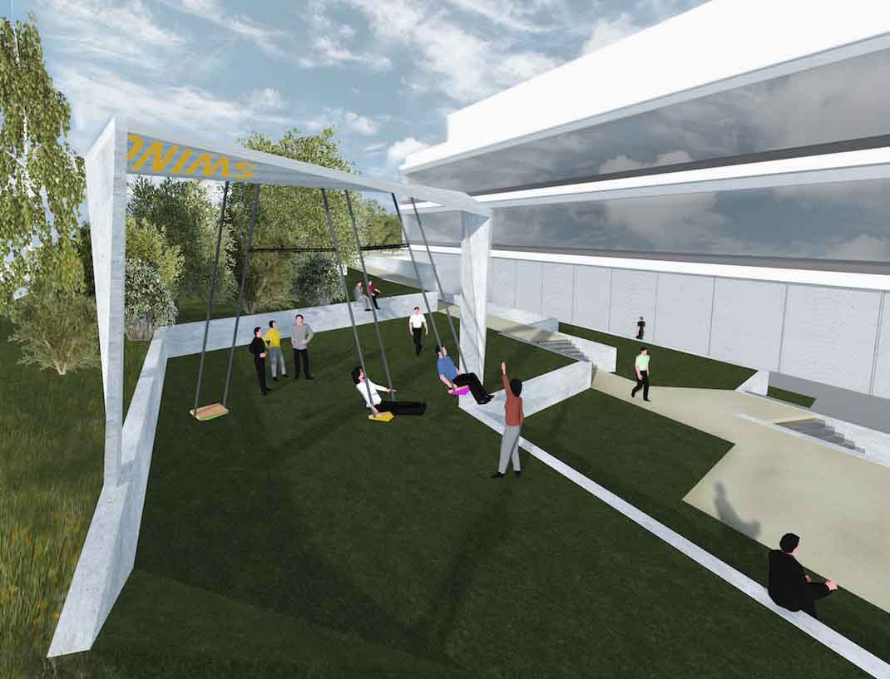
Die Energie der Schaukelnden wird, wie von Geisterhand gesteuert, von einem zum anderen übertragen. Es kann sich dabei ereignen, dass eine Schaukel nahezu stehen bleibt, während die andere(n) dynamisch höher streben – im nächsten Moment kann sich dieses Prozedere vollkommen umkehren...
Visualisierung: Danny Liebisch
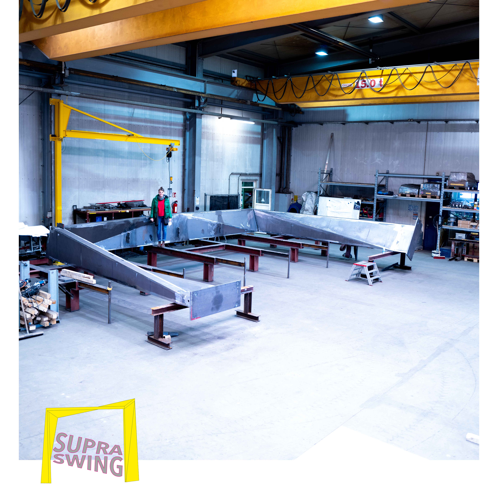
Der Rahmen der Supra Swing
Im Luftraum vor der Galerie im Körnerpark schwebt ein großes Pollenkorn. Es ist ein überdimensioniertes „pflanzliches Aerosol“.
Die Installation Floating Pollen setzt einen Makrofokus auf Pollenkörner – sie zirkulieren in der Luft, bestäuben Blüten und werden von uns eingeatmet. Unter dem Mikroskop betrachtet wird ihre vielseitige Geometrie sichtbar. Das Pollenkorn im Körnerpark schwingt und dreht sich in der frischen Luft. Blütenblatt- und Bienenwabenformen erscheinen und überlagern sich.
Floating Pollen ist eine optimistische Aerosolskulptur. Die Arbeit entstand 2020 in Auseinandersetzung mit den unsichtbaren Partikeln, die uns in der Luft umgeben. Seit Beginn des Lockdowns und der Schließung der Kulturbetriebe zeigt die Galerie im Körnerpark aktuell Kunst im Außenraum.
In Zusammenarbeit mit Elisa Dierson. #KAMEL. Honigbienen und Flugobjekte sind seit 2012 häufig Protagonist*innen der künstlerischen Arbeiten von Elisa Dierson und Katja Marie Voigt.
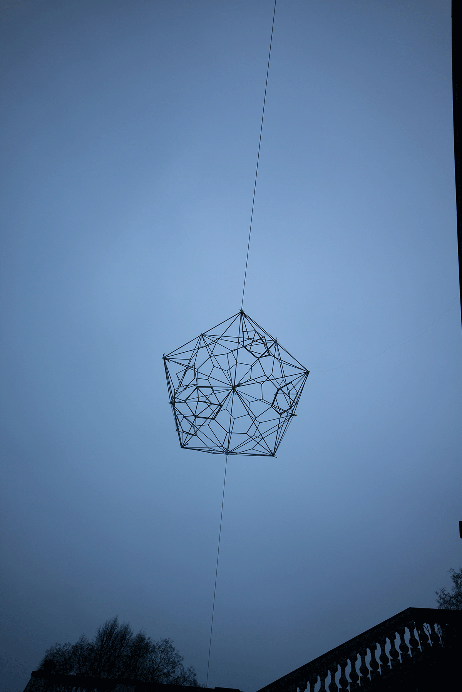
Aerosol im Luftraum vor der geschlossenen Galerie im Körnerpark 2020
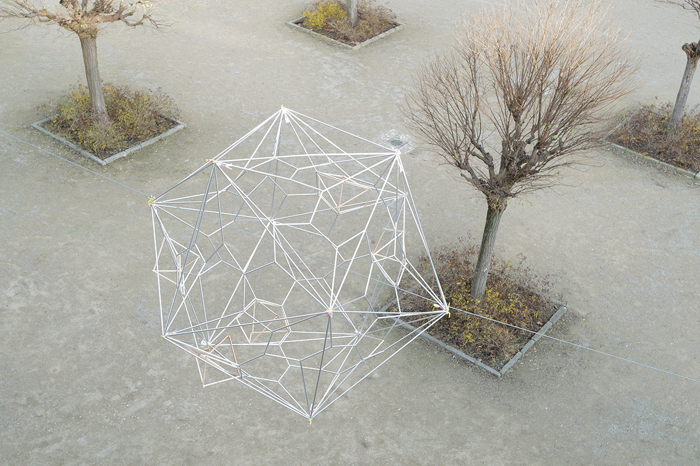
„Kartierungen fremdbestimmter Lebenszeit“ umfasst eine Sammlung von vierzehn Drucken, die im Risographie-Verfahren erstellt wurden. In den psycho(geo)grafischen Karten werden Raumwahrnehmung, Zeitlichkeit und die Intensität subjektiver Erlebnisse in ihrer Korrelation visuell repräsentiert. Die Kartenformationen sind im Rahmen des Selbstexperimentes „14 Tage fremdbestimmt“ entstanden. Das Experiment bestand darin, dass 14 Tage Lebenszeit der Künstlerin durch vollkommen fremde Menschen organisiert und vorgegeben wurden. Jeden Tag bekam die Künstlerin einen Tagesplan zugeschickt, führte ihn aus und lebte in einem extern determinierten Zeitkorsett.
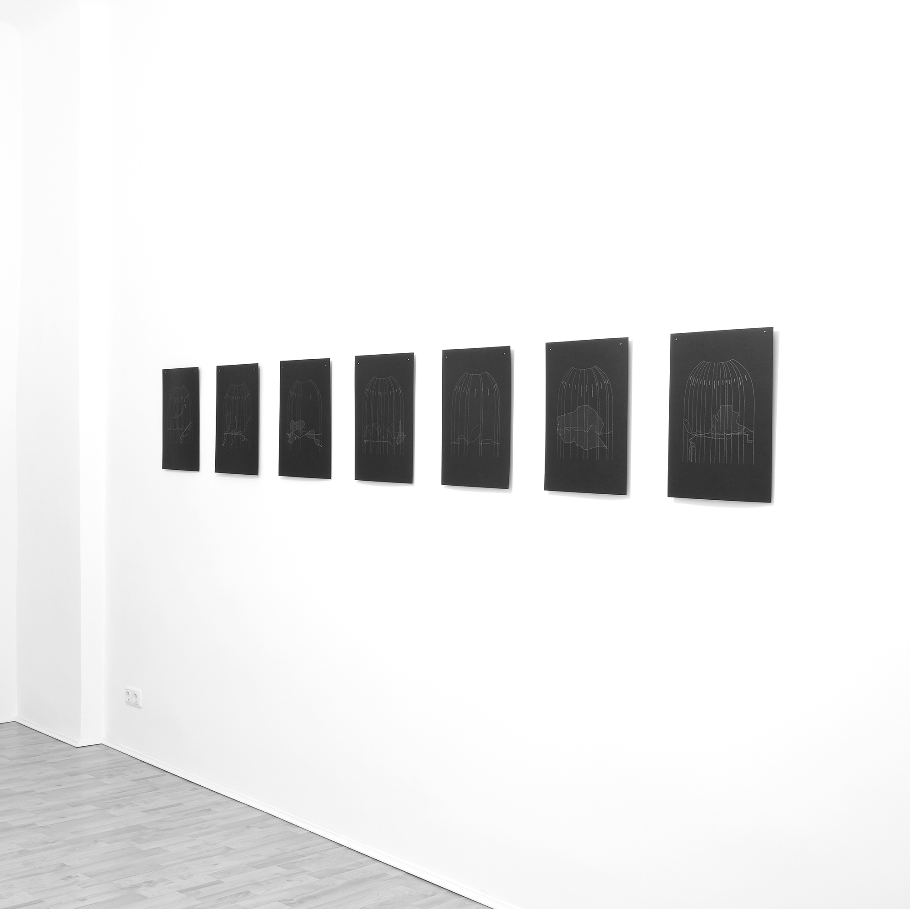
Ausstellungsansicht, Mantik Berlin Foto: Christiane Hantzsch
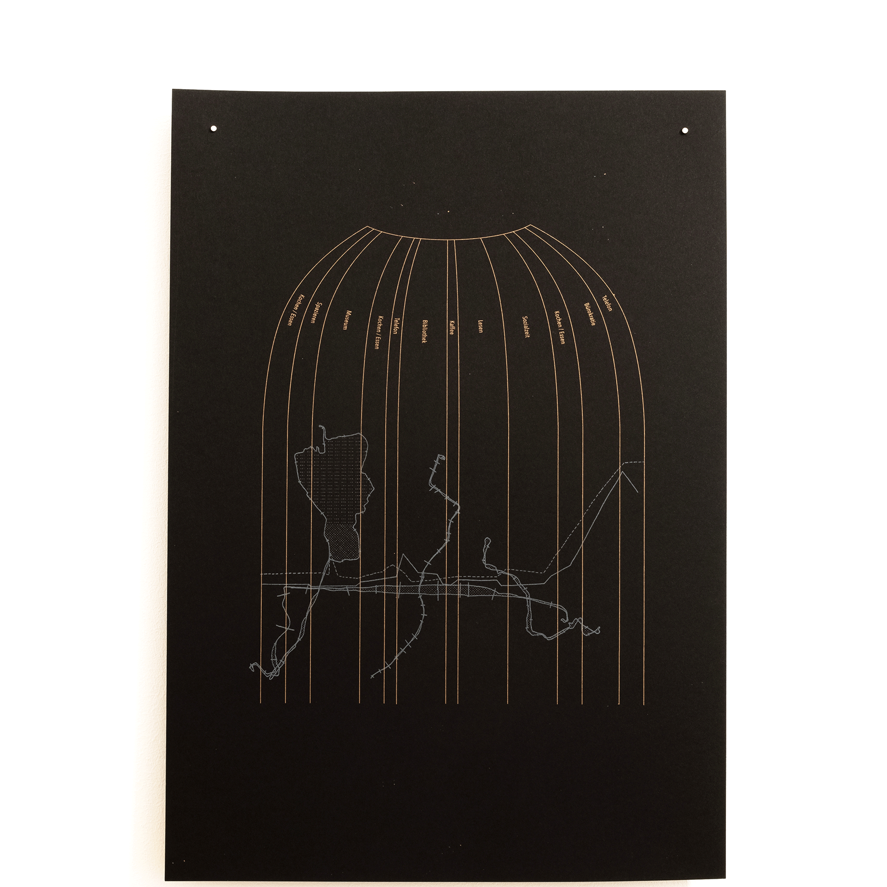
Karte Tag 1 Foto: Christiane Hantzsch

Karte Tag 7 Foto: Christiane Hantzsch
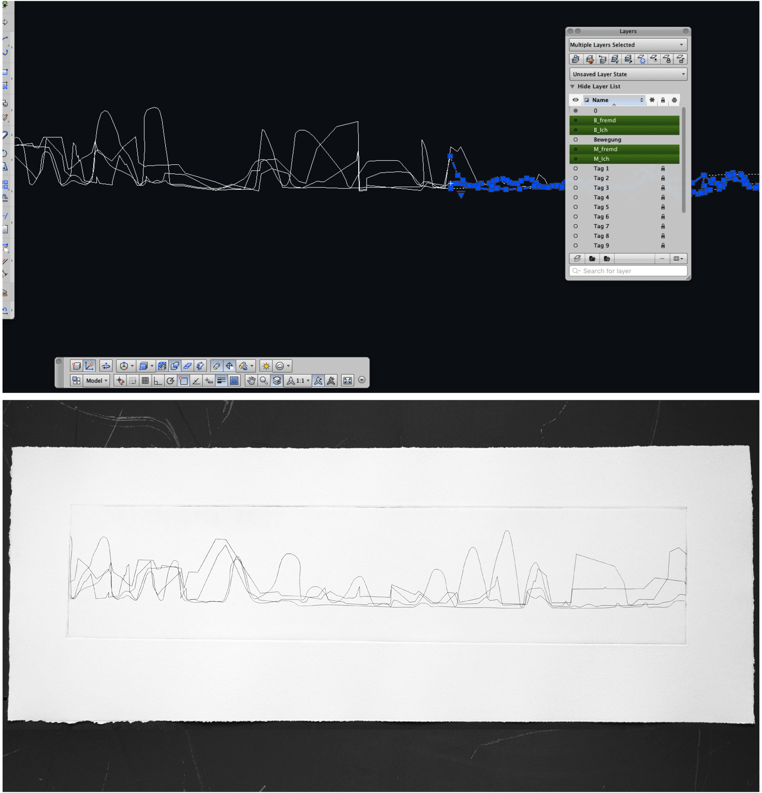Handelsverlauf der Handlungen der Künstlerin und der/des Fremden
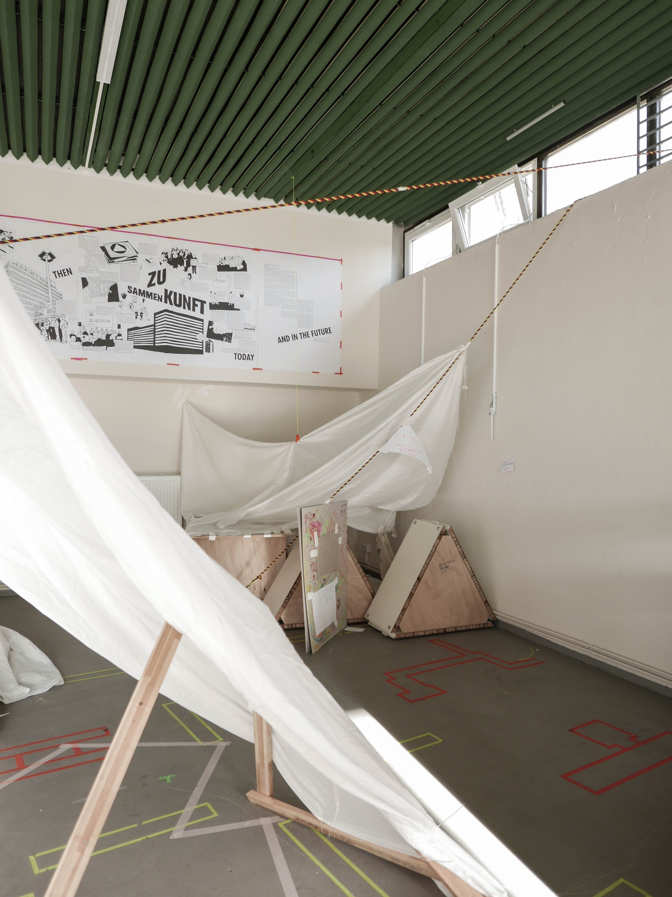
Höhlendorfworkshop in der Werkstatt der Initiative Haus der Statistik
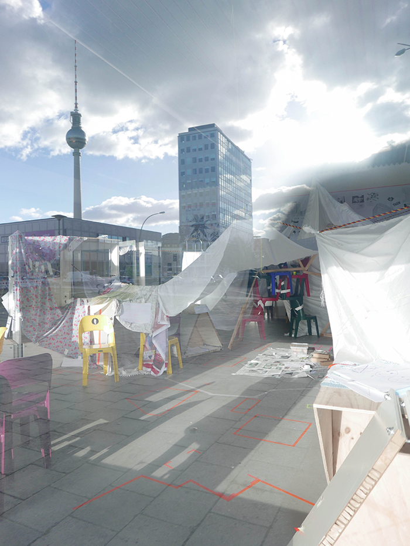Außenansicht, Blick in den alten Fahrradladen
Das Handbuch zur Überwindung der Zeit
zeigt die Auseinandersetzung mit der Echtzeit individuellen Erlebens und ihrer medialen Repräsentation.
Zeit, als eine Grunddeterminante des Lebens, wird im Handbuch zur Überwindung der Zeit in ihrer Komplexität vergegenwärtigt. Jede*r Leser*in kann im Laufe der Lektüre ihre besondere Art und Weise der Zeitüberwindung zu fassen bekommen – und sei es nur für einen Augenblick.
Das Handbuch zur Überwindung der Zeit ist ein Hand gebundenes Unikat – ein künsterisches Sammelsurium. Arbeiten, die zum Thema Zeitwahrnehmung entstanden sind werden visualisiert, diskutiert und reflektiert.
Zum Anfassen, Aufschlagen, Durchblättern und Eintauchen: Das Handbuch zur Überwindung der Zeit ist eine Einbuchbibliothek – Da es 2018 in die Sammlung der Herzogin Anna Amalia Bibliothek in Weimar übergegangen ist, kann es von nun an im Hauptlesesaal des Studienzentrums gelesen werden.
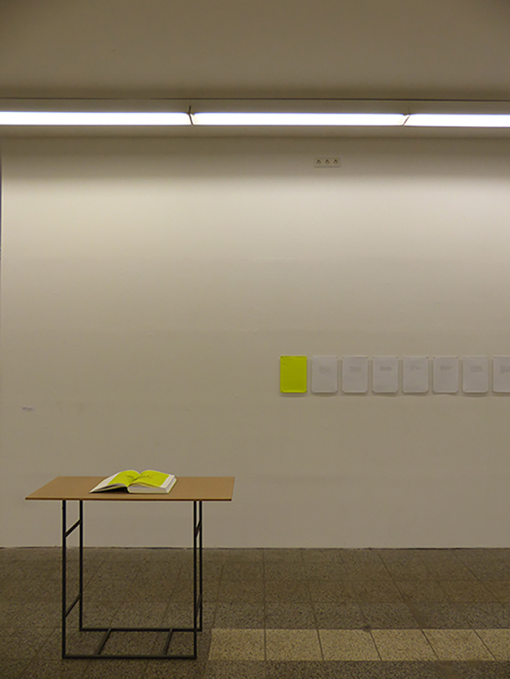
Ausstellungsansicht, Kunsthalle am Hamburger Platz Berlin Weißensee
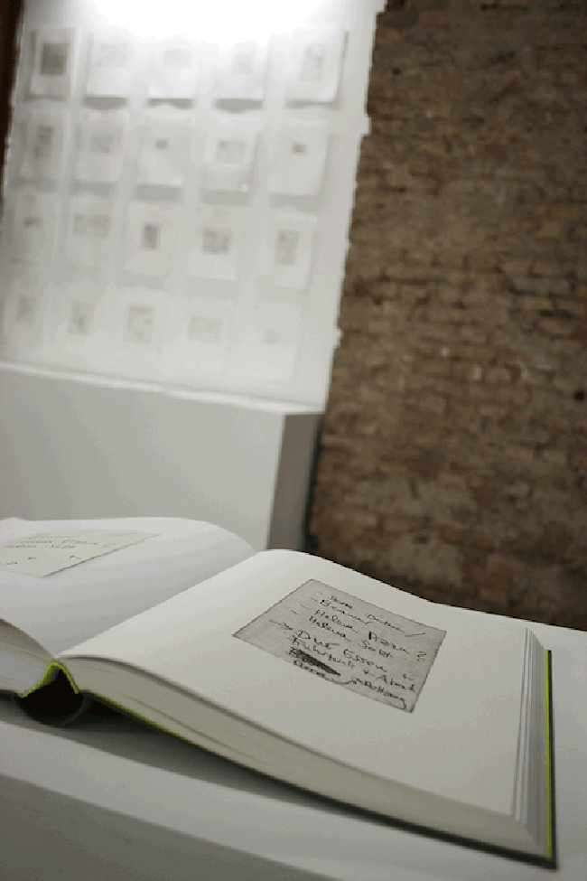
Ausstellungsansicht, Kühlhaus Berlin
Sensing Bees ist ein patizipatives Kunstprojekt der Künstlerinnengruppe Moabees, das im Rahmen von BeeCoin entstanden ist. Der BeeCoin ist eine Kryptowährung, die auf dem Wohlergehen von Bienen beruht und wurde in Zusammenarbeit von KUNSTrePUBLIK mit Hiveeyes, Nascent und Moabees im Haus der Statistik am Alexanderplatz entwickelt.
Die Künstlerinnen und Imkerinnengruppe Moabees arrangiert Besuche bei den Honigbienenvölkern, die im Haus der Statistik leben und arbeiten.
Eine Auseinandersetzung mit den in den Völkern installierten Prozessor-Sensoren, den menschlichen Sinnesapparaten und dem Bienenauge. Die Umgebung der Völker wird mit einer Bienenkamera gescannt. Artefakte aus dem Haus und dessen Hof werden gesammelt und die Fundstücke mithilfe des fotochemischen Verfahrens der Cyanotypie abgelichtet. Als Belichtungsquelle dient ultraviolettes (Sonnen-)Licht, das die Bienen erkennen können, während es für menschliche Augen normalerweise unsichtbar bleibt.

Biene die im Haus der Statistik lebt und arbeitet
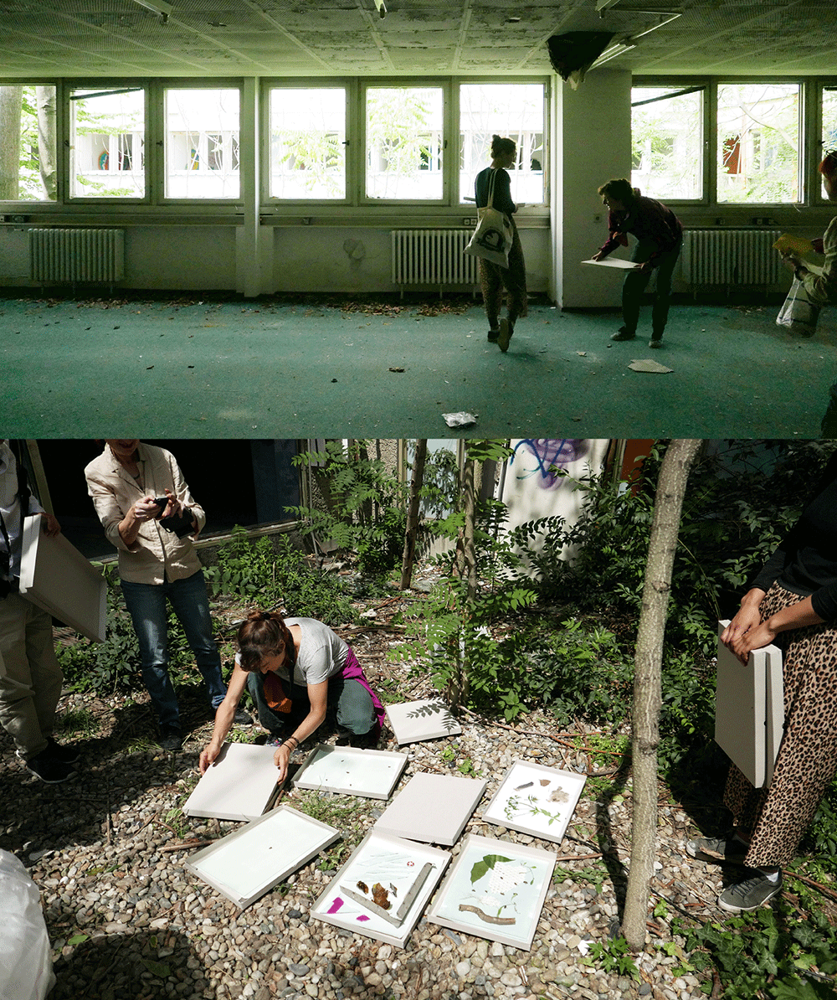Workshop Sensing Bees im Haus der Statistik, Belichtung der Cyanotypien
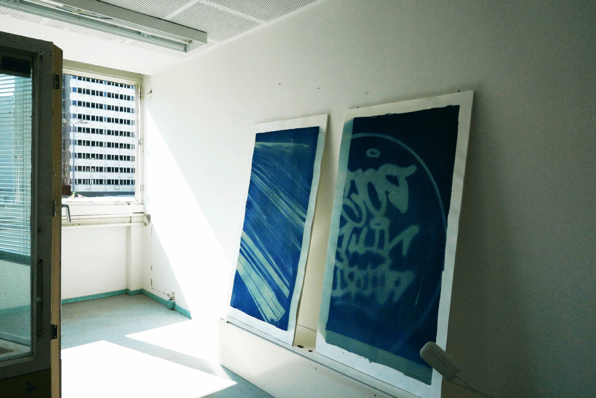
Ausstellungsansicht Cyanotypien der Fenster aus dem Haus der Statistik, Berlin Art Week
Projekte, Förderungen
2021 // Realisierung Supra Swing / 1. Platz Kunst am Bau Wettbewerb Forschungsneubau supraFAB Freie Universität Berlin2021 // CO–founder Siebdruck-Riso-Fusion / offene Werkstatt Gropiusstadt
2018 - 2022 // PFUSCH! Pfusch am Bau Kunst am Bau / gefördert vom Bundesministerium für Bildung und Forschung (BKJ)
2013 - 2022 // Moabees – ein Pilotinnenprojekt am ZK/U Berlin / gefördert vom Bundesministerium für Bildung und Forschung (BKJ)
2017 - 2018 // NACHT / gefördert vom Berliner Projektfonds Kulturelle Bildung
2017 // CO-founder Tiny Penthaus / Projektraum / im Rahmen des Initiativenzusammenschlusses ZUsammenKUNFT / Pilotprojekt Initiative Haus der Statistik in Berlin Kreuzberg
2016 - dato // CO-founder Penthaus für schöne Formate / Druckstudio für Risographie
2016 - 2017 // Kunstpostamt / gefördert vom Bundesministerium für Bildung und Forschung (BKJ)
2012 - 2013 // Bienenbewegung / gefördert vom Berliner Projektfonds Kulturelle Bildung
Auswahl Ausstellungen
2020 // Aerosol im Körnerparl / Kunst im öffentlichen Raum / Galerie im Körnerpark Berlin
2020 // Berliner Blau / Galerie im Körnerpark Berlin
2020 // Kartierungen fremdbestimmter Lebenszeit / Mantik Berlin
2019 // Sensing Bees / Im Rahmen von BeeCoin, Statista, Berlin Art Week// Ein Projekt von Hiveeyes, Nascent, KUNSTrePUBLIK, Moabees /
2019 // DRUCK DRUCK DRUCK / Kuratiert von Nina Prader und John Z. Komurki /
Galerie im Körnerpark Berlin
2019 // Lecture / Tiny Data – failure & utopia /
10th SAR International Conference on Artistic Research
Zurich University of the Arts
2019 // Manifest of Practice / Bauhaus 100 / Thüringer Staatskanzlei, Berlin
2018 // Lange Nacht der Bilder / Alte Gießerei Berlin
2018 // Lecture / Bauhaus Universität Weimar / [dis]solving boundaries – Young Bauhaus Research Conference
2018 // The Vivid Unknown / Kunstraum rosalux Berlin
2017 // Die Kapelle und das spezifische Gewicht der Zeit / kuratiert von Anne Brannys / ehem. Kapelle im Stadtschloss Weimar
2016 // Künstlerinnengruppe Moabees / HONIGKINO #3 / ZK/U Berlin
2015 // AREYOUTHERE? / L40, Verein zur Förderung von Kunst und Kultur am Rosa-Luxemburg-Platz e.V.
2014 // IMAGO / Galerie Zwitschermaschine, Berlin
2014 // REIF / Kühlhaus Berlin
2014 // TI:ME / Salon am Moritzplatz Berlin / kuratiert von Mari Poller
2013 // Lecture / HANDBUCH ZUR ÜBERWINDUNG DER ZEIT / Kunsthalle am Hamburger Platz, Berlin Weißensee
2013 // 7LOCOMOTION / Kunsthalle am Hamburger Platz, Berlin Weißensee
2012 // MONHABITE EINE EXPEDITION/ ZK/U (Zentrum für Kunst und Urbanistik, Berlin)
2011 // Lecture / IBA LABOR Kunst Stadt, Hamburg / mit dem Club der internationalen Raumforscher Berlin
Master of Arts, Kunst im öffentlichen Kontext, Weißensee Kunsthochschule Berlin
Vorsitzende Kunst Werk Stadt Berlin e.V.
Bachelor of Science, Architektur, Technische Universität Berlin
Gründungsmitlgied Künstlerinnen- und Imkerinnengruppe Moabees
info * katjamarievoigt.com
© Katja Marie Voigt
Bilder (wenn nicht anders angegeben)
Katja Marie Voigt und VG-Bild Kunst/Bonn
Kunst Werk Stadt Berlin e.V. Moabees – ein PilotInnenprojekt
Impressum
Verantwortlich für den Inhalt nach § 55 Abs. 2 RStV:
Katja Marie Voigt
E‑Mail: info * katjamarievoigt.com
Haftungsausschluss:
Haftung für Inhalte
Die Inhalte unserer Seiten wurden mit größter Sorgfalt erstellt. Für die Richtigkeit, Vollständigkeit und Aktualität der Inhalte können wir jedoch keine Gewähr übernehmen. Als Diensteanbieter sind wir gemäß § 7 Abs.1 TMG für eigene Inhalte auf diesen Seiten nach den allgemeinen Gesetzen verantwortlich. Nach §§ 8 bis 10 TMG sind wir als Diensteanbieter jedoch nicht verpflichtet, übermittelte oder gespeicherte fremde Informationen zu überwachen oder nach Umständen zu forschen, die auf eine rechtswidrige Tätigkeit hinweisen. Verpflichtungen zur Entfernung oder Sperrung der Nutzung von Informationen nach den allgemeinen Gesetzen bleiben hiervon unberührt. Eine diesbezügliche Haftung ist jedoch erst ab dem Zeitpunkt der Kenntnis einer konkreten Rechtsverletzung möglich. Bei Bekanntwerden von entsprechenden Rechtsverletzungen werden wir diese Inhalte umgehend entfernen.
Haftung für Links
Unser Angebot enthält Links zu externen Webseiten Dritter, auf deren Inhalte wir keinen Einfluss haben. Deshalb können wir für diese fremden Inhalte auch keine Gewähr übernehmen. Für die Inhalte der verlinkten Seiten ist stets der jeweilige Anbieter oder Betreiber der Seiten verantwortlich. Die verlinkten Seiten wurden zum Zeitpunkt der Verlinkung auf mögliche Rechtsverstöße überprüft. Rechtswidrige Inhalte waren zum Zeitpunkt der Verlinkung nicht erkennbar. Eine permanente inhaltliche Kontrolle der verlinkten Seiten ist jedoch ohne konkrete Anhaltspunkte einer Rechtsverletzung nicht zumutbar. Bei Bekanntwerden von Rechtsverletzungen werden wir derartige Links umgehend entfernen.
Urheberrecht
Die durch die Seitenbetreiber erstellten Inhalte und Werke auf diesen Seiten unterliegen dem deutschen Urheberrecht. Die Vervielfältigung, Bearbeitung, Verbreitung und jede Art der Verwertung außerhalb der Grenzen des Urheberrechtes bedürfen der schriftlichen Zustimmung des jeweiligen Autors bzw. Erstellers. Downloads und Kopien dieser Seite sind nur für den privaten, nicht kommerziellen Gebrauch gestattet. Soweit die Inhalte auf dieser Seite nicht vom Betreiber erstellt wurden, werden die Urheberrechte Dritter beachtet. Insbesondere werden Inhalte Dritter als solche gekennzeichnet. Sollten Sie trotzdem auf eine Urheberrechtsverletzung aufmerksam werden, bitten wir um einen entsprechenden Hinweis. Bei Bekanntwerden von Rechtsverletzungen werden wir derartige Inhalte umgehend entfernen.
Impressum vom Impressum Generator der Kanzlei Hasselbach, Bonn